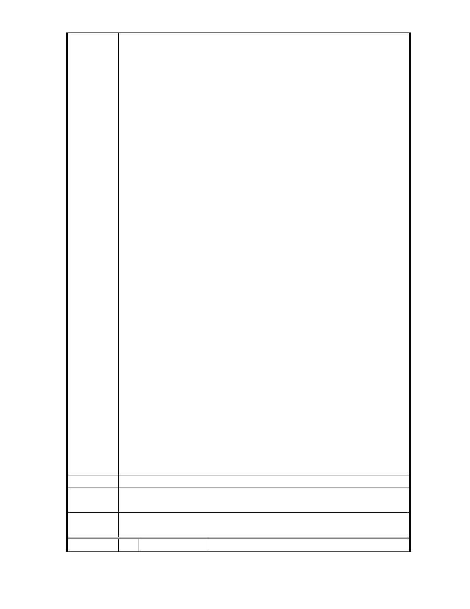

之生活品質，究與『住二』之土地用地分區形成強烈對比，時
為十足諷刺之憾事！關於此點，陳情人乃建議貴委員會等相關
單位，理應專案考量放寬本區域之容積率，俾以維持中等之人
口密度與建築密度為荷。
3. 規劃中的「北投士林科技園區」指日可待，政府應未雨綢繆：
「北投士林科技園區」分布在雙溪兩側，位於福國路、承德路
交叉路口一帶，為臺北市科技走廊一環，民國 116 年即將完成
招商，屆時勢必與內湖科學園區在商業、科技、經濟發展各方
面連成一氣，交流鼎盛。2011 年的今天，承上（二）所述，至
善路一、二段至自強隧道此一狹常地帶的交通、噪音、空氣品
質已是如此不堪，迄民國 116 年「北投士林科技園區」完成之
時，將如何承受日益沉重的巨大交通量，令人堪憂。籲請政府
各相關單位理應未雨綢繆，放遠眼光，即刻著手規劃、提出改
善之具體措施，以因應本區域日形惡化之生活品質，藉以維持
本區域較低之人口與建築密度為是。除此之外，陳情人建議貴
委員會等相關單位或可考量將本區域土地使用分區變更為「商
業區」為妥。
4. 國立故宮博物院「大故宮計畫」，應有更為創新的具體作為：
100 年 4 月 7 日蒙國立故宮博物院以台博秘字第 1000003007 號
函函副本公司，略以：「本院刻正積極籌建『大故宮計畫』，俾
整合建築、文化、藝術、會議、休閒等功能而成複合式之觀光
旗艦園區。…並經國安局同意撥用原屬國防部陸軍衛勤學校用
地…」等語。
良以國立故宮博物院為世界五大博物館之一，典藏高達 68 萬餘
件中華文物，周邊尚有多處其他軍事設施予用地雜處其間，頗
感突兀與不協調，此景亦為其它舉世聞名大博物館所未嘗見，
當可藉由本次都市計畫通盤檢討之機會，使周邊各軍事單位遷
離，將土地撥付故宮博物院使用；以此大片之館區用地，興建
歷朝各代之展館 6-7 處，使先秦、秦漢、隋唐、宋、元、明、
清等各朝皆有各自固定展館。陳情人以為，與其使大批文物長
期靜躺於故宮後山之中，毋寧將其同時盡皆呈現於世人面前。
若能如此，則全世界愛好藝文人士，將可隨時來台參覽中華歷
代文物、促進學術交流與研究，而國立故宮博物院將進一步成
為全世界人文薈萃之地、典藏之重鎮，且可大幅增加經濟收益
，提昇國人文化涵養，增加就業機會，實一舉數得，何樂而不
為也。
建 議 辦 法 以上陳情與建議，懇請惠予考量採行。
專
結
案
小
組
論
相關建議錄請市府納入細部計畫參考。
委
決
員
會
議
依專案小組結論辦理。
編 號 45 陳情人 國立故宮博物院
- 62 -